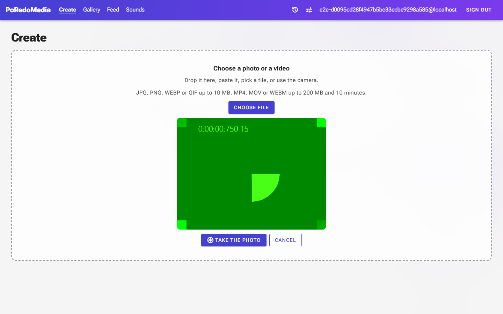
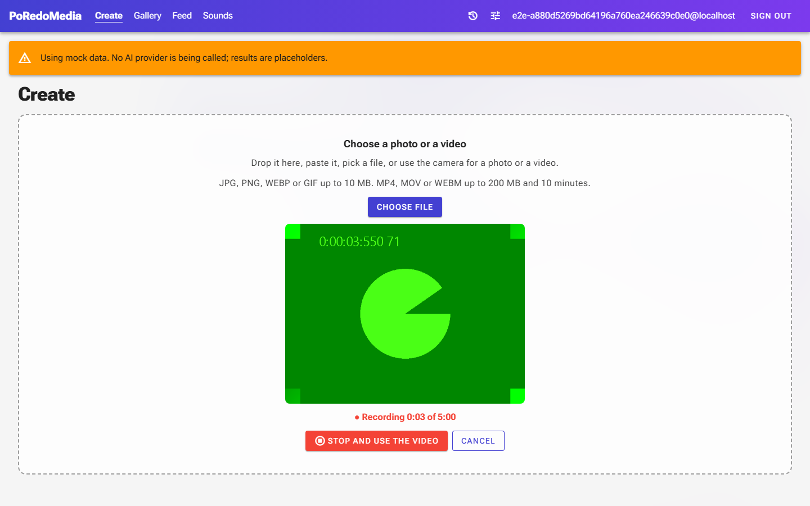
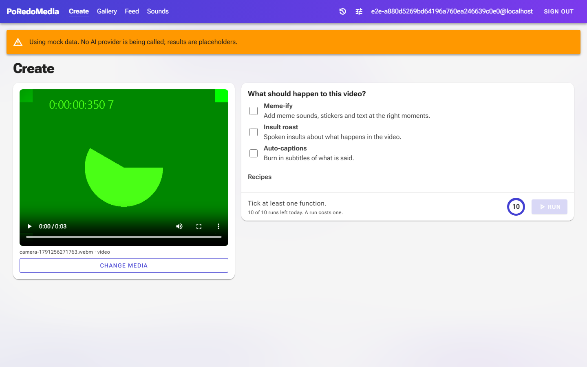

PoRedoMedia UI changes: record a video with the camera
5 October 2026. Left is before, right is after. Yellow numbers mark what is new. Captured at 1440×900 with the
browser's synthetic test camera, which is why the picture is a green test pattern.
Create: the camera panel
Before: the camera takes a photo only

After: recording a video

12
1 How long the recording has been going, out of the 5 minute limit. It stops by itself at the limit.
2 "Record a video" sits beside "Take the photo" until it is pressed; while recording it becomes
"Stop and use the video". Cancel throws the recording away.
Create: the recorded video is picked
After

The clip is uploaded like any chosen file and offered the video functions, Insult roast included.